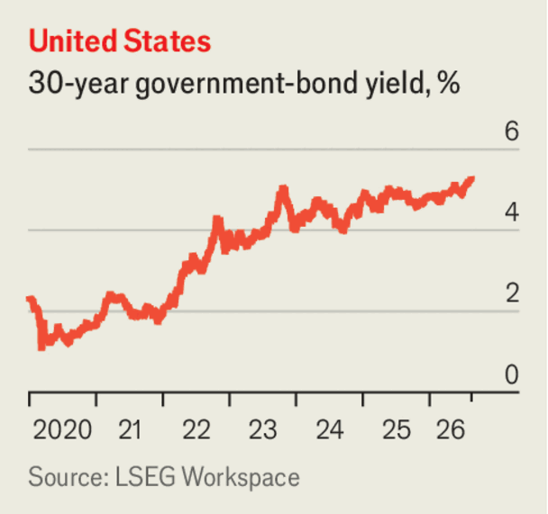
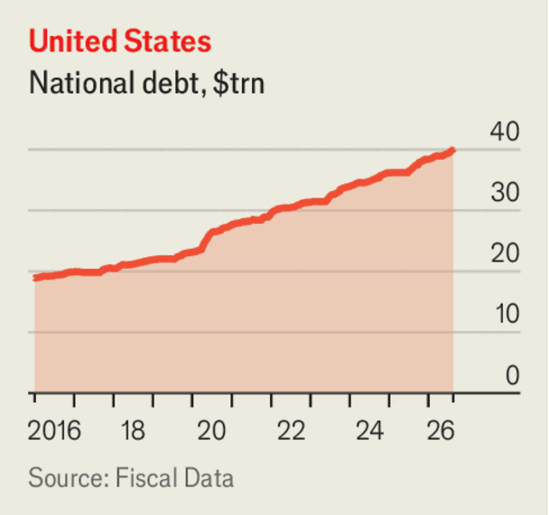

Business
Aug 20th 2026
Bond yields pulled back from recent peaks. The yields on 30-year American government bonds had reached their highest levels since 2007, as investors worried about mounting government debt, among other things. The Treasury intervened, doubling its repurchases of long-dated government bonds, a move that increases demand for the bonds, and so pushes their yields lower. Yields had surged elsewhere, too. Japan’s ten-year yield almost breached 3% for the first time since the 1990s. German ten- and 30-year yields rose to 15-year highs and French ten-year yields were at their highest in 18 years.

Underlining those market concerns, America’s total national debt rose above $40trn for the first time. The debt has doubled in less than a decade.

Claiming that the Trump administration is trying to bully its ABC network, Disney filed a lawsuit against the Federal Communications Commission over the agency’s plan for an early review of ABC’s broadcast licences, saying it was part of a “retaliatory campaign”. Last year Jimmy Kimmel’s show was briefly suspended when the FCC’s chairman criticised the host’s comments on a slain conservative activist. The FCC is also investigating “The View”, another chat show, and Disney’s diversity policies.
After a security breach that involved an AI agent acting by itself to hack into another firm’s data sets, OpenAI tightened the security standards for the environments in which it trains and evaluates the models. This includes “more controls to isolate higher-risk and untrusted workloads from the internet”. A new monitoring system will alert researchers to a problem within 30 minutes of it surfacing. OpenAI also launched a version of ChatGPT for under-18s that puts “teen safety first”.
Unitree’s share price rose by 460% on the first day of trading. The world’s biggest maker of humanoid robots is based in China and launched its IPO on Shanghai’s tech-focused STAR exchange. Its machines can dance and perform martial arts. Shortly before its stock-market debut, Unitree unveiled a new model it is calling “Superman”, which it claims can jump two metres (6.6 feet) and run as fast as 12.66 metres per second. Superman is still a work in progress, said the company.
Nvidia dug into its deep pockets to guarantee up to $105bn in financing for a new data-centre hub in Ohio that will be leased by OpenAI. OpenAI is a big buyer of Nvidia’s chips. Nvidia thinks it could reap $150bn-$200bn from every upgrade to each new generation of its chips at the site. Addressing concerns that the money it invests in AI infrastructure is mostly intended to boost demand for its chips from customers, Nvidia said that the Ohio deal did not constitute circular financing, because OpenAI will pay the lease.
The supply crunch in memory chips hit Xiaomi’s earnings. The smartphone-maker’s revenues and profits plunged in the latest quarter, year on year, as it absorbed the higher costs of the chips.
It emerged that Google has struck a deal to acquire the electronic data held by Spirit Airlines, which ceased operations in May. The data include internal emails, passenger bookings and frequent-flyer information (all stripped of personal ID). Airlines are increasingly using AI to set fares. A court hearing on the sale of the data was delayed after a cabin-crew association filed an objection to it.
Moderna announced that a vaccine for melanoma cancer it is developing with Merck had delivered positive results in late-stage trials. Its share price soared by 175%, though it is still far below its pandemic highs, when Moderna was a pioneer in covid-19 vaccines.
A court in China sentenced the founder of Evergrande, a property firm that triggered a financial crisis when it collapsed with huge piles of debt, to life in prison. Hui Ka Yan pleaded guilty in April to several charges of fraud.
Britain’s annual inflation rate rose to 2.9% in July, mostly because of an increase in electricity and gas prices. The energy cap on household bills was lifted in July to reflect higher wholesale energy prices.
LandSpace became the first Chinese firm to land a rocket on its legs. Such powered landings were pioneered by SpaceX, allowing the re-use of a rocket’s first stage, which drastically cuts launch costs. Last month China also recovered the first stage of a state-built Long March rocket, catching it at sea in a net strung up on a barge.
A one-off model for charity of Ferrari’s fully electric car, the Luce, was sold at auction in Monterey, California, for $40m. The Luce is designed by Sir Jony Ive, who created Apple’s products, including the iPhone. It was a record price for a new vehicle. The record for any car is still the €135m ($142m) paid in 2022 at a private auction in Germany for a 1955 Mercedes-Benz 300 SLR Uhlenhaut Coupé.